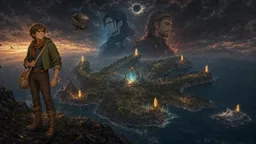

Willowmere villager
neutral
Aren Vale
Choose a response.
ASTERRA · THE HAND
Preparing the first path…
STORY RPG · A 20–30 MINUTE JOURNEY
Seven crystals hold a forgotten gate open. A king will burn a world to cross it. An ordinary villager must decide what a door is worth.
Birchwood contains a southern trail, three mushroom patches, and a weathered stone in the northeast.

The scene continues in text.
Choose a response.